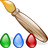
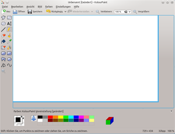
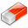
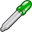
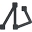
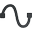
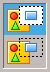
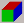
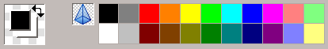

KolourPaint
Dieser Artikel wurde für die folgenden Ubuntu-Versionen getestet:
Ubuntu 16.04 Xenial Xerus
Ubuntu 14.04 Trusty Tahr
Zum Verständnis dieses Artikels sind folgende Seiten hilfreich:

KolourPaint  ist ein freies, einfach zu bedienendes Bildbearbeitungsprogramm für die KDE-Desktopoberfläche, geschrieben in C++, und benutzt die Qt- und KDE-Bibliotheken. Das Programm zielt darauf ab, ein leicht verständliches Bedienkonzept mit einer für den Durchschnittsbenutzer angemessenen Funktionalität zu vereinen. So ist KolourPaint auf Funktionen wie Malen, Zeichnen von Diagrammen, einfache Bildbearbeitung mit einigen Effekten sowie Erstellung von Programmsymbolen, Cliparts und Logos ausgerichtet.
ist ein freies, einfach zu bedienendes Bildbearbeitungsprogramm für die KDE-Desktopoberfläche, geschrieben in C++, und benutzt die Qt- und KDE-Bibliotheken. Das Programm zielt darauf ab, ein leicht verständliches Bedienkonzept mit einer für den Durchschnittsbenutzer angemessenen Funktionalität zu vereinen. So ist KolourPaint auf Funktionen wie Malen, Zeichnen von Diagrammen, einfache Bildbearbeitung mit einigen Effekten sowie Erstellung von Programmsymbolen, Cliparts und Logos ausgerichtet.
Auswahl der wichtigsten Programmfeatures:
Rücknahme/Wiederholen von Bearbeitungsschritten (bis zu 500 Schritte)
Malwerkzeuge wie Pinsel, Radierer, Pipette, Ellipsen, Füllwerkzeug, Polygone, Rechtecke (auch abgerundet), Sprühwerkzeug, Text
Auswahlwerkzeuge
Transparenz
Effekte wie Schärfen und Weichzeichnen, Skalieren und Beschneiden, Farbmanipulation, Farbbalance und mehr.
Das Programm beherrscht das Öffnen und Speichern von Formaten wie JPEG, PNG, TIFF, BMP, ICO und anderen.
|  |
| KolourPaint |
Installation¶
Zur Installation [1] ist folgendes Paket notwendig:
kolourpaint4 (universe)
 mit apturl
mit apturl
Paketliste zum Kopieren:
sudo apt-get install kolourpaint4
sudo aptitude install kolourpaint4
Nach erfolgreicher Installation ist das Programm unter KDE im Menüpunkt "Grafik -> KolourPaint" zu finden.
Bedienung¶
Die Bedienung des Programms ist intuitiv und über die Werkzeugleisten oder die Menüs leicht zu bewerkstelligen. Zur Steuerung stehen dem Nutzer neben der normalen Werkzeug- und Menüsteuerung mithilfe der Maus auch zahlreiche Tastenkürzel zur Verfügung, welche über das Menü "Einstellungen -> Kurzbefehle festlegen" eingesehen und bei Bedarf individuell vom Benutzer definiert werden können.
Bei über die Bedienungsinformationen in diesem Artikel hinausgehenden Fragestellungen kann auf das von den Entwicklern im Internet bereitgestellte Handbuch zurückgegriffen werden.
Erstellen¶
Das Öffnen eines Bildes erfolgt wie allgemein üblich über "Datei -> Öffnen" ( Strg + O ), die Neuerstellung einer Leinwand über "Datei -> Öffnen" ( Strg + N ). Eine neu erstellte Leinwand kann per Mausanfasser am Leinwandrand (blauer Rand) in der Größe verändert werden.
KolourPaint bietet unter dem Menü "Datei -> Bildschirmfoto aufnehmen" die Möglichkeit, ein Bildschirmfoto zu generieren und direkt zur Bearbeitung im Programm zu öffnen. Hierbei können als Optionen eine Aufnahmeverzögerung sowie das Aus- bzw. Einblenden des Programm-Hauptfensters eingestellt werden.
Über das Menü "Datei -> Scannen" können Bilder direkt eingescannt und zur Bearbeitung ins Programm importiert werden.
Werkzeuge¶
Die grundlegenden Mal- und Zeichenwerkzeuge sind unmittelbar über die linke Werkzeugleiste oder zum schnelleren und effektiveren Arbeiten über Tastenkürzel zugänglich.
| Übersicht der Tastenkürzel zu den Mal- und Zeichenwerkzeugen | ||
| Symbol | Werkzeugname | Taste |
| Freihandauswahl | M (engl.: manual selection) | |
| Rechteckige Auswahl | S (engl.: rectangular selection) | |
| Elliptische Auswahl | I (engl.: elliptical selection) | |
| Text | T (engl.: text) | |
| Linie | L (engl.: line) | |
| Stift | P (engl.: pen) | |
|  | Radiergummi | A (engl.: eraser) |
| Pinsel | B (engl.: brush) | |
| Farbeimer | F (engl.: flood fill) | |
|  | Farbpipette | C (engl.: color picker) |
| Farbradierer | O (engl.: color eraser) | |
| Sprühdose | Y (engl.: spray can) | |
| Abgerundetes Rechteck | U (engl.: rounded rectangle) | |
| Rechteck | R (engl.: rectangle) | |
| Polygon | G (engl.: polygon) | |
| Ellipse | E (engl.: ellipse) | |
|  | Linienpfad | N (engl.: connected lines) |
|  | Kurve | V (engl.: curve) |
| Zoom | Z (engl.: zoom) | |
Tipps und Tricks¶
Bei bestimmten Werkzeugen erscheinen einige zusätzliche optionale Einstellmöglichkeiten, wie z.B. beim Textwerkzeug oder bei den Vieleckwerkzeugen ("Keine Füllung", "Mit Hintergrundfarbe füllen", "Mit Vordergrundfarbe füllen", Linienstärken).
Einige Werkzeuge wie z.B. die Malwerkzeuge Linie, Pinsel und Farbeimer oder die Pipette arbeiten bei gedrückter
 -Taste in der Vordergrundfarbe und bei gedrückter
-Taste in der Vordergrundfarbe und bei gedrückter  -Taste in der Hintergrundfarbe.
-Taste in der Hintergrundfarbe.
|  |
| Undurchsichtig/Transparent |
In den untersten zwei Werkzeugfeldern lässt sich der Umgang mit der Farbe Weiß (z.B. beim Einfügen oder Verschieben von Auswahlen) einstellen: Undurchsichtig oder Transparent.
Ellipsenwerkzeug:
⇧ halten: zeichnet einen Kreis.
Strg halten: zieht aus einem angeklickten Mittelpunkt eine Ellipse auf.
Strg + ⇧ halten: zieht aus einem angeklickten Mittelpunkt einen Kreis auf.
Auswahlwerkzeuge:
Verschieben der Auswahl (Mauszeiger wird zum Fadenkreuz) erfolgt bei gedrückter
-Taste. Wird während des Verschiebens die Taste Strg gehalten, wird eine Kopie der Auswahl verschoben.
Wird während des Verschiebens die Taste ⇧ gehalten, wird die Auswahl beim Verschieben verschmiert.
Radiergummis:
Die Radiergummis malen standardmäßig die Hintergrundfarbe.
Um in der Vordergrundfarbe zu malen, ist die
-Taste zu verwenden.Doppelklick auf das Radiergummi-Symbol löscht das ganze Bild (siehe auch "Bild -> Löschen", Strg ⇧ + N )
Der Radiergummi hat eine eckige Form. Um mit einer anderen Form zu radieren, ist statt des Radiergummis der Pinsel ( B ) bei gedrückter rechter Maustaste zu verwenden.
Linienwerkzeug:
Strg halten: Linienwinkel wird auf das nächste Vielfache von 30 Grad fixiert.
⇧ halten: Linienwinkel wird auf das nächste Vielfache von 45 Grad fixiert.
Strg + ⇧ halten: Linienwinkel wird auf das nächste Vielfache von 30 oder 45 Grad fixiert.
Mit Hilfe der rechts neben der Palette liegenden Schaltfläche  lässt sich der Grad der Farbähnlichkeit für die Verwendung des Füllwerkzeugs einstellen (exakte Übereinstimmung bis 30% Ähnlichkeit).
Farben¶
|  |
| Vorder-/Hintergrund-Farbe mit Farbpalette |
Die Farbpalette im unteren Fensterbereich kann mithilfe mehrerer voreingestellter Farbzusammenstellungen angepasst ("Farben -> KDE-Farben") oder individuell bestückt werden: "Farben -> Zeile hinzufügen", anschließend Doppelklick auf linkes Vordergrund-Farbfeld, individuelle Farbe festlegen, dann vom Vordergrund-Farbfeld auf ein freies Palettenfeld ziehen (Drag'n'Drop).
Effekte¶
| Übersicht über Tastenkürzel zu den Effekten | |||
| Effekt | Erreichbarkeit | Tastenkürzel | Erklärung |
| Zuschneiden | "Bild -> Als Bild verwenden (Zuschneiden)" | Strg + T | Schneidet das Bild auf eine vorher getätigte Auswahl zu. |
| Automatisches Zuschneiden | "Bild -> Internen Rand entfernen" | Strg + U | Verkleinert eine zuvor getätigte Auswahl automatisch, indem alle weißen Ränder/Außenbereiche entfernt werden. |
| Größe ändern / Skalieren | "Bild -> Skalieren" | Strg + E | Skaliert die Leinwand, das gesamte Bild oder eine getätigte Auswahl (auch "Weiches Skalieren"); auch im -Klick-Kontextmenü |
| Spiegeln | "Bild -> Senkrecht spiegeln"" | Strg + F | Spiegelt Bild oder Auswahl an der horizontalen Spiegelachse; auch im -Klick-Kontextmenü |
| "Bild -> "Waagerecht spiegeln" | kein Tastenkürzel | Spiegelt Bild oder Auswahl an der vertikalen Spiegelachse; auch im -Klick-Kontextmenü | |
| Drehen | "Bild -> Drehen" | Strg + R | Dreht Bild oder Auswahl um benutzerdefinierten Wert; auch im -Klick-Kontextmenü |
| "Bild -> Links drehen" | Strg ⇧ + ← | Dreht Bild oder Auswahl um 90 Grad nach links. | |
| "Bild -> Rechts drehen" | Strg ⇧ + → | Dreht Bild oder Auswahl um 90 Grad nach rechts. | |
| Kippen (Scheren) | "Bild -> Kippen" | Strg + K | Schert ein Bild oder eine Auswahl horizontal oder vertikal; auch im -Klick-Kontextmenü |
| Weich- und Scharfzeichnen | "Bild -> Mehr Effekte"; Effekt: "Weich- & Scharfzeichnen". | Strg + M | Zeichnet das Bild oder die Auswahl weich oder scharf. |
| Relief | "Bild -> Mehr Effekte"; Effekt: "Relief"; Checkbox "Aktivieren" abhaken. | Strg + M | Erzeugt einen plastischen Effekt durch Verstärkung der Kanten. |
| Farbabgleich | "Bild -> Mehr Effekte"; Effekt: "Abgleich" | Strg + M | Abgleich von Helligkeit, Kontrast und Gamma; alle Kanäle oder Kanäle einzeln. |
| Einfärben | "Bild -> Mehr Effekte"; Effekt: "Einfärben"; Checkbox "Aktivieren" abhaken. | Strg + M | Färbt das Bild mit diversen Schattierungen der gewählten zwei Farben ein. |
| Invertieren | "Bild -> Mehr Effekte"; Effekt: "Invertieren". | Strg + M | Invertiert einzelne oder alle RGB-Kanäle eines Bildes, z.B. um einen Negativ-Effekt zu erzeugen. |
| Invertieren alle Kanäle | "Bild -> Farben invertieren" | Strg + I | Invertiert alle RGB-Kanäle eines Bildes und erzeugt so einen Negativ-Effekt; auch im -Klick-Kontextmenü |
| Farben reduzieren | "Bild -> Mehr Effekte"; Effekt: "Farben reduzieren". | Strg + M | Reduziert die Farben eines Bildes oder einer Auswahl auf 256 oder nach Schwarzweiß (mit oder ohne Dithering/Rasterung) |
| In Graustufen umwandeln | "Bild -> In Graustufen umwandeln" | kein Tastenkürzel | Reduziert die Farben eines Bildes oder einer Auswahl auf Graustufen. |
| In Schwarzweiß umwandeln | "Bild -> In Schwarzweiß umwandeln" | kein Tastenkürzel | Reduziert die Farben eines Bildes oder einer Auswahl auf Schwarzweiß (mit Dithering/Rasterung); für Schwarzweiß ohne Dithering den Effekt "Farben reduzieren" verwenden. |
| Bild löschen | "Bild -> Löschen" | Strg ⇧ + N | Füllt das ganze Bild oder die Auswahl mit der Hintergrundfarbe; alternativ: Doppelklick auf Radiergummi-Symbol. |
Hinweis:
Größenänderung/Skalierung, Drehen und Kippen eines Bildes erfordert möglicherweise die Änderung der Leinwandgröße. Diese wird vom Programm automatisch angepasst, wenn der entsprechende Effekt auf ein komplettes (nicht-selektiertes) Bild angewendet wird. Bei Anwendung auf ein ganz ausgewähltes ("Bearbeiten -> alles Auswählen" oder Strg + A ) Bild wird die Größe der Leinwand nicht angepasst, auch wenn das Ergebnis des Effekts nicht in diese hineinpasst. Es werden also möglicherweise Randbereiche abgeschnitten.
Ansichtsoptionen¶
Zoom: Mittels "Ansicht -> Zoom" kann "in das Bild" hineingezoomt werden.
Zoom-In: Strg + +
Zoom-Out: Strg + -
Hilfsgitter: Ab einer Vergrößerung von 600% lässt sich mittels "Ansicht -> Gitter anzeigen" (alternativ Strg + G ) zur besseren Kontrolle beim Arbeiten ein Raster für die einzelnen Pixel einblenden.
Vorschau: "Ansicht -> Vorschaubild anzeigen" (alternativ Strg + H ) lässt eine kleine Vorschau erscheinen, die bspw. die Gesamtansicht eines detailvergrößerten Bildes erlaubt.
Konfiguration¶
Tastenkürzel¶
Über "Einstellungen -> Kurzbefehle festlegen" ist es möglich, die voreingestellten Tastenkürzel einzusehen und nach Bedarf individuell abzuändern.
Werkzeugleisten¶
Über "Einstellungen -> Werkzeugleisten einrichten" können die Werkzeugleisten individuell konfiguriert werden.
Handbuch¶
Das offizielle Handbuch kann im Internet unter The KolourPaint Handbook oder offline unter "Hilfe -> Handbuch zu KolourPaint" (alternativ
F1 ) eingesehen werden.
- Erstellt mit Inyoka
-
 2004 – 2017 ubuntuusers.de • Einige Rechte vorbehalten
2004 – 2017 ubuntuusers.de • Einige Rechte vorbehalten
Lizenz • Kontakt • Datenschutz • Impressum • Serverstatus -
Serverhousing gespendet von